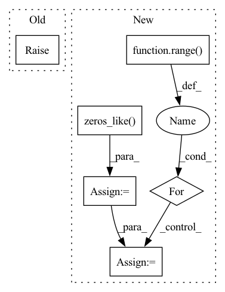

Pattern ID :34108
Before Change
)
def prune(self, percentile):
raise NotImplementedError
w_copy = np.abs(self.w.detach().numpy())
b_copy = np.abs(self.b.detach().numpy())
w_percentile = np.percentile(w_copy, percentile)After Change
w_copy = np.abs(self.w.detach().numpy())
b_copy = np.abs(self.b.detach().numpy())
new_w_mask = np.zeros_like( w_copy)
new_b_mask = np.zeros_like(b_copy)
for task_num in range( self.num_tasks):
if task_num != 0:
for prev_idx in range(task_num - 1):
w_copy[task_num][new_w_mask[prev_idx] == 1] = 0
b_copy[task_num][new_b_mask[prev_idx] == 1] = 0
w_percentile = np.percentile(w_copy[task_num], percentile)
b_percentile = np.percentile(b_copy[task_num], percentile)
new_w_mask[task_num] = (w_copy[task_num] >= w_percentile).astype(int)
new_b_mask[task_num] = (b_copy[task_num] >= b_percentile).astype(int)
self.w_mask = torch.Tensor(new_w_mask)In pattern: SUPERPATTERN
Frequency: 3
Non-data size: 6
Instances Fragment ID: 97460927
Project Name: beyond-ml-labs/beyondml
Commit Name: 03dd7b87e47d75ba5a7317f31e1ff50b340898a7
Time: 2022-06-02
Author: 77127228+jacobrenn@users.noreply.github.com
File Name: mann/burning/layers/MultiMaskedConv2D.py
M Class Name: MultiMaskedConv2D
N Class Name: MultiMaskedConv2D
M Method Name: prune(2)
N Method Name: prune(2)
M Parent Class: torch.nn.Module
N Parent Class: torch.nn.Module
M File Name: mann/burning/layers/MultiMaskedConv2D.py
N File Name: mann/burning/layers/MultiMaskedConv2D.py
M Start Line: 98
M End Line: 107
N Start Line: 85
N End Line: 103
Before Change
A Tensor. Has the same type as params.
raise NotImplementedError
def clip_by_value(t, clip_value_min, clip_value_max):After Change
indices = indices.unsqueeze(0).transpose(0, -1)
ndim = indices.shape[0]
indices = indices.long()
idx = torch.zeros_like( indices[0], device=indices.device) .long()
m = 1
for i in range( ndim) [::-1]:
idx += indices[i] * m
m *= params.size(i)
out = torch.take(params, idx)
return out.view(out_shape) Fragment ID: 97460934
Project Name: tensorlayer/tensorlayerx
Commit Name: 7fc66508a3f36efeafd526c68960039e377b2427
Time: 2022-03-02
Author: laicheng_vip@163.com
File Name: tensorlayerx/backend/ops/torch_backend.py
M Class Name: AnonimousClass
N Class Name: AnonimousClass
M Method Name: gather_nd(3)
N Method Name: gather_nd(3)
M Parent Class:
N Parent Class:
M File Name: tensorlayerx/backend/ops/torch_backend.py
N File Name: tensorlayerx/backend/ops/torch_backend.py
M Start Line: 875
M End Line: 875
N Start Line: 886
N End Line: 897
Before Change
return outputs
def prune(self, percentile):
raise NotImplementedError
w_copy = np.abs(self.w.detach().numpy())
b_copy = np.abs(self.b.detach().numpy())
w_percentile = np.percentile(w_copy, percentile)After Change
w_copy = np.abs(self.w.detach().numpy())
b_copy = np.abs(self.b.detach().numpy())
new_w_mask = np.zeros_like( w_copy)
new_b_mask = np.zeros_like(b_copy)
for task_num in range( self.num_tasks):
if task_num != 0:
for prev_idx in range(task_num - 1):
w_copy[task_num][new_w_mask[prev_idx] == 1] = 0
b_copy[task_num][new_b_mask[prev_idx] == 1] = 0
w_percentile = np.percentile(w_copy[task_num], percentile)
b_percentile = np.percentile(b_copy[task_num], percentile)
new_w_mask[task_num] = (w_copy[task_num] >= w_percentile).astype(int)
new_b_mask[task_num] = (b_copy[task_num] >= b_percentile).astype(int)
self.w_mask = torch.Tensor(new_w_mask) Fragment ID: 97460933
Project Name: beyond-ml-labs/beyondml
Commit Name: 03dd7b87e47d75ba5a7317f31e1ff50b340898a7
Time: 2022-06-02
Author: 77127228+jacobrenn@users.noreply.github.com
File Name: mann/burning/layers/MultiMaskedDense.py
M Class Name: MultiMaskedDense
N Class Name: MultiMaskedDense
M Method Name: prune(2)
N Method Name: prune(2)
M Parent Class: torch.nn.Module
N Parent Class: torch.nn.Module
M File Name: mann/burning/layers/MultiMaskedDense.py
N File Name: mann/burning/layers/MultiMaskedDense.py
M Start Line: 43
M End Line: 52
N Start Line: 40
N End Line: 58